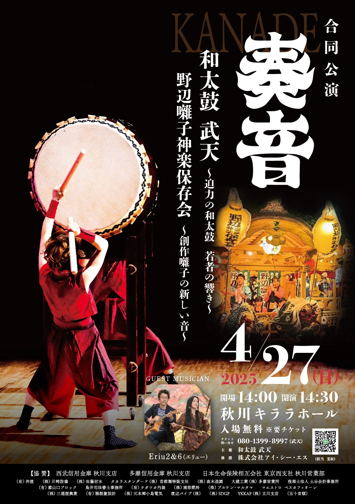

4月
27
合同公演「奏音」
📍 キララホール
野辺囃子神楽保存会との合同公演。ゲストにEriu2&6さんをお招きし、コラボ曲も披露しました。

Performance History
和太鼓 武天は2007年の結成以来、地域のお祭りや文化イベント、企業イベントなど、
多岐にわたる舞台で演奏を行ってきました。
これまでの活動の一部をご紹介いたします。
📍 キララホール
野辺囃子神楽保存会との合同公演。ゲストにEriu2&6さんをお招きし、コラボ曲も披露しました。
📍 秋川ふれあいホール
年に一度の発表会。全クラスが一堂に会し、日頃の練習成果を披露しました。
📍 コピスみよし
和太鼓を披露しました。
📍 秋川ふれあいホール
全クラス参加の年次発表会。新曲も披露しました。
📍 秋川駅前広場
夏の恒例イベントで、力強い太鼓の音を響かせました。
📍 深沢自然人村
和太鼓を披露しました。
📍 HUグループ
さくら祭りで和太鼓を演奏しました。
📍 秋川ふれあいホール
全クラス参加の年次発表会。新曲も初披露しました。
📍 大田区アプリコ大ホール
📍 ネッツぐーたまセンター
青梅ゆかた祭りで和太鼓を披露しました。
📍 秋川駅前通り
夏まつりを太鼓演奏で盛り上げました。
📍 相模原市民会館ホール
第五回関東大会に出演。多くの方々にご来場いただきました。
📍 秋川駅南口
さくら祭りで和太鼓を披露しました。
📍 秋川キララホール
武天15周年記念発表会。/p>
📍 秋川駅南口
ハロウィンイベントに仮装して出演しました。
📍 秋川キララホール
秋川流域青少年育成郷土芸能大会。
📍 ゆとろぎホール
青梅太鼓フェスに出演しました。
📍 ふれあいホール
和い和い和太鼓フェスティバルに出演しました。
📍 府中の森芸術劇場どりーむホール
東京多摩太鼓祭りに出演しました。
📍 日本工学院 片柳アリーナ
日本太鼓ジュニアコンクール東京大会に出場しました。
和太鼓 武天 結成。青梅市・あきる野市を中心に活動開始。
武天 発表会（年1回開催）
あきる野市・青梅市周辺の各種イベント出演
企業イベント・福祉施設への出張演奏
学校公演・ワークショップ開催
出演のご依頼、体験レッスンのお申し込みなど、
お気軽にお問い合わせください。